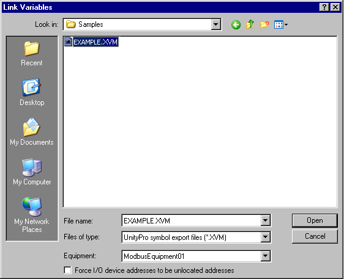

|
|
|
|
|
|
|
|
The Section below describes how to link an PLC Symbol File to Vijeo Designer. For information on how to add the symbols to Vijeo Designer once the file is linked, see Adding Symbols to the Variable List.
From your equipment configuration software, export the list of names and device addresses.
Vijeo Designer supports the following configuration tools and file types.
|
Configuration Tool |
File Type |
|
Concept |
.ccn |
|
EPAS-4 |
.sym_xml |
|
SoMachine Motion |
.xml |
|
SoMachine Basic |
.smbp |
|
ModSoft Workbench |
.txt |
|
PL7 |
.scy .fef |
|
ProWORX Plus |
.fis |
|
RSLogix5000 |
.l5k |
|
Siemens |
.asc |
|
TwidoSoft |
.twd |
|
TwidoSuite |
.xtwd .xpr |
|
UnityPro |
.stu .xvm |
|
Rockwell |
.l5k |

To link a *.txt symbol file from Concept, you must change the file name extension to *.ccn before importing the symbol file into Vijeo Designer.
Some file types require you to install the configuration software on the same PC as the Vijeo Designer editor.
Vijeo Designer also supports simple CSV files (file type .csv). The format supported for these files is: Address, SymbolName, Comment.
If you are importing large numbers of variables from UnityPro and the *.stu file becomes very large, consider using .xvm files for better performance.
Copy the exported PLC symbol file to the Vijeo Designer editor PC, or to a network folder visible from the PC.
In the Navigator window's Project tab, below the I/O Manager node, add and configure the PLC equipment.
Right-click the Variables node and click Link Variables.
In the Link Variables dialog box's Files of Type field, select the type of file exported from the equipment configuration software.

|
Dialog Item |
Description |
|
File name |
Specifies the name of the file you selected. For best results, the filename should use only ASCII characters. If you are working on an operating system based on Simplified Chinese, you can link symbol files that use Simplified Chinese characters in the filename, but you may not be able to link symbol files that use Japanese characters. Avoid operating system dependencies by using only ASCII characters in filenames. |
|
Files of type |
Select the file type.
|
|
Equipment |
Select the equipment you want to associate with the PLC symbol file. The Equipment field lists equipment that is not yet associated with a PLC configuration file. |
|
Force I/O device addresses to be unlocated addresses |
Displays only if you select a Unity Pro file type. When this check box is selected, the PLC symbol import feature will convert symbols with the following device addresses into symbols with unlocated device addresses in the equipment (for example, %UVxxxxx):
When symbols with device addresses are converted into symbols with unlocated variable addresses, Runtime will be able to communicate with the I/O device through the supported set of function codes. This feature is available for some drivers. For more information, see Section 5.8.1, Driver Access Errors for Direct I/O, System Device, Constant Device. |
When the file becomes visible, select the file then select the equipment node defined in step 3, and click Open.
The equipment configuration file is now linked, and displays the New Variables From Equipment dialog box.

Make sure the equipment configured in the I/O Manager matches the equipment used by the exported file. It is possible to link variables to the wrong equipment.
Only one configuration file can be linked to one equipment node.